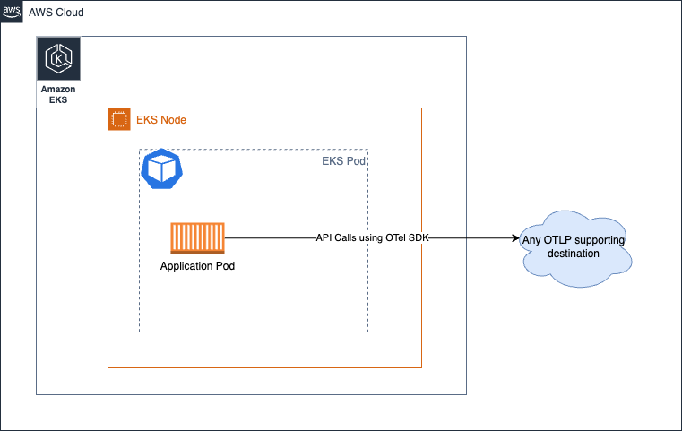
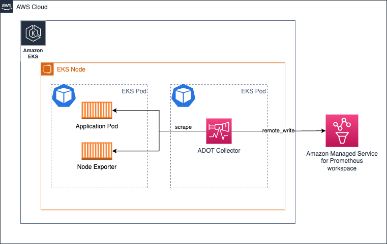
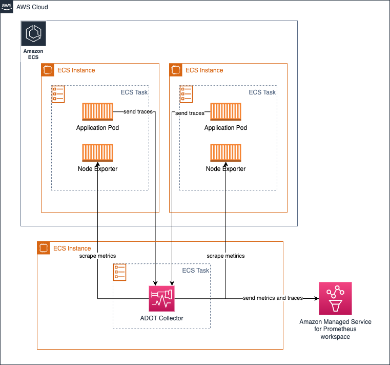

AWS Distro for OpenTelemetry (ADOT) Collector の運用¶
ADOT Collector は、CNCF のオープンソースの OpenTelemetry Collector のダウンストリームディストリビューションです。
お客様は、ADOT Collector を使用して、オンプレミス、AWS、他のクラウド プロバイダーなど、さまざまな環境からメトリクスやトレースなどのシグナルを収集できます。
実稼働環境で ADOT Collector を運用しスケールするには、オペレーターは Collector のヘルスを監視し、必要に応じてスケールする必要があります。このガイドでは、本番環境で ADOT Collector を運用するためのアクションについて学習します。
デプロイアーキテクチャ¶
必要条件に応じて、検討したいデプロイオプションがいくつかあります。
- コレクターなし
- エージェント
- ゲートウェイ
Tip
これらの概念の詳細については、OpenTelemetry のドキュメントをご確認ください。
コレクタなし¶
このオプションは、基本的にコレクタを方程式から完全に省略します。ご存知かもしれませんが、OTEL SDK から直接デスティネーション サービスへの API 呼び出しを行い、シグナルを送信することが可能です。たとえば、ADOT Collector などのアウトオブプロセス エージェントにスパンを送信する代わりに、アプリケーション プロセスから直接 AWS X-Ray の PutTraceSegments API を呼び出すことを考えてみてください。
アプローチのガイダンスを変更する AWS 固有の側面はないため、詳細については上流のドキュメントの セクション を確認することを強くおすすめします。

エージェント¶
このアプローチでは、コレクターを分散させてシグナルをデスティネーションに収集します。
No Collector オプションとは異なり、ここでは関心事を分離し、リモート API 呼び出しを行うためにリソースを使用する必要があるアプリケーションから分離します。代わりに、ローカルでアクセス可能なエージェントと通信します。
基本的には、Amazon EKS 環境で Kubernetes の sidecar としてコレクターを実行する場合は、次のようになります。

上記のアーキテクチャでは、コレクターがアプリケーションコンテナと同じ Pod で実行されるため、localhost からターゲットをスクレイプすることになるため、スクレイプ設定でサービス検出メカニズムを実際に使用する必要がほとんどありません。
同じアーキテクチャはトレースの収集にも適用されます。単に ここで示す OTEL パイプラインを作成する必要があります。
長所と短所¶
-
このデザインを推奨する1つの論拠は、コレクターが自身の仕事を行うために特別な量のリソース(CPU、メモリ)を割り当てる必要がないことです。ターゲットがローカルソースに限定されているためです。
-
このアプローチを使用することの短所は、コレクターポッドの構成の変更点の数は、クラスターで実行しているアプリケーションの数に比例することです。 これは、ポッドに期待されるワークロードに応じて、各ポッドの CPU、メモリ、その他のリソース割り当てを個別に管理する必要があることを意味します。これに注意を払わないと、コレクターポッドのリソースが過剰または不足し、パフォーマンスの低下や、ノード内の他のポッドで使用できるはずの CPU サイクルとメモリのロックアップが発生する可能性があります。
ニーズに応じて、コレクターをデプロイメント、デーモンセット、ステートフルセットなどの他のモデルでもデプロイできます。
Amazon EKS 上でコレクターをデーモンセットとして実行する¶
コレクターの負荷(スクレイピングとメトリクスの Amazon Managed Service for Prometheus ワークスペースへの送信)を EKS ノード全体で均等に分散させたい場合は、コレクターを デーモンセットとして実行することを選択できます。

コレクターがホスト/ノードからのターゲットのみをスクレイプする keep アクションがあることを確認してください。
参考のために以下のサンプルをご覧ください。その他の構成の詳細はこちらをご覧ください。
scrape_configs:
- job_name: kubernetes-apiservers
bearer_token_file: /var/run/secrets/kubernetes.io/serviceaccount/token
kubernetes_sd_configs:
- role: endpoints
relabel_configs:
- action: keep
regex: $K8S_NODE_NAME
source_labels: [__meta_kubernetes_endpoint_node_name]
scheme: https
tls_config:
ca_file: /var/run/secrets/kubernetes.io/serviceaccount/ca.crt
insecure_skip_verify: true
同じアーキテクチャをトレースの収集にも使用できます。この場合、コレクターが Prometheus メトリクスをスクレイプするエンドポイントに到達する代わりに、アプリケーションポッドからトレーススパンがコレクターに送信されます。
長所と短所¶
長所
- スケーリングに関する懸念が最小限
- 高可用性の構成が難しい
- コレクターのコピーが多すぎる
- ログのサポートが容易
短所
- リソース利用の最適化の観点から最適ではない
- リソース割り当てが均衡を欠く
Amazon EC2 でコレクターを実行する¶
EC2 でコレクターを実行する際にサイドカー方式はないため、EC2 インスタンス上でエージェントとしてコレクターを実行します。以下のような静的スクレイプ設定を設定して、インスタンス内のターゲットを発見し、メトリクスをスクレイプできます。
以下の設定は、localhost のポート 9090 と 8081 のエンドポイントをスクレイプします。
One Observability ワークショップの EC2 に焦点を当てたモジュール を通じて、このトピックのハンズオン体験を深めましょう。
global:
scrape_interval: 15s # By default, scrape targets every 15 seconds.
scrape_configs:
- job_name: 'prometheus'
static_configs:
- targets: ['localhost:9090', 'localhost:8081']
Amazon EKS 上でコレクターをデプロイメントとして実行する¶
コレクターをデプロイメントとして実行すると、コレクターの高可用性も提供できるので特に便利です。ターゲットの数、スクレイプできるメトリクスの可用性などに応じて、コレクターのリソースを調整して、コレクターが飢餓状態にならず、シグナル収集に問題が発生しないようにする必要があります。
次のアーキテクチャは、コレクターがワークロード ノードとは別のノードでデプロイされ、メトリクスとトレースを収集する方法を示しています。

メトリクス収集の高可用性を設定するには、高可用性の設定方法を詳しく説明したドキュメント をご覧ください。
Amazon ECS でのメトリクス収集のためのコレクターを中心的なタスクとして実行する¶
ECS Observer 拡張機能 を使用して、ECS クラスター内のさまざまなタスクやクラスター間で Prometheus メトリクスを収集できます。

拡張機能のコレクターの構成例:
extensions:
ecs_observer:
refresh_interval: 60s # format is https://golang.org/pkg/time/#ParseDuration
cluster_name: 'Cluster-1' # cluster name need manual config
cluster_region: 'us-west-2' # region can be configured directly or use AWS_REGION env var
result_file: '/etc/ecs_sd_targets.yaml' # the directory for file must already exists
services:
- name_pattern: '^retail-.*$'
docker_labels:
- port_label: 'ECS_PROMETHEUS_EXPORTER_PORT'
task_definitions:
- job_name: 'task_def_1'
metrics_path: '/metrics'
metrics_ports:
- 9113
- 9090
arn_pattern: '.*:task-definition/nginx:[0-9]+'
メリットとデメリット¶
- このモデルの利点は、自分で管理しなければならないコレクターと構成が少ないことです。
- クラスターがかなり大きく、スクレイプするターゲットが数千個ある場合は、負荷がコレクター間でバランスよく分散されるようにアーキテクチャを慎重に設計する必要があります。HA の理由から同じコレクターの近似クローンを実行する必要があることを追加すると、運用上の問題を回避するために注意深く行う必要があります。
ゲートウェイ¶

Collector の健全性の管理¶
OTEL Collector は、健全性とパフォーマンスを把握するためのいくつかのシグナルを公開しています。Collector の健全性を密接に監視することは、次のような修正アクションを実行するために不可欠です。
- Collector を水平方向にスケールする
- Collector が望ましい動作をするために追加のリソースをプロビジョニングする
コレクターからのヘルスメトリクスの収集¶
OTEL コレクターは、service パイプラインに telemetry セクションを追加するだけで、Prometheus Exposition Format でメトリクスを公開するように構成できます。コレクターは、自身のログも stdout に出力できます。
テレメトリ構成の詳細は、OpenTelemetry のドキュメント を参照してください。
コレクターのサンプルテレメトリ構成です。
構成後、コレクターは http://localhost:8888/metrics で次のようなメトリクスのエクスポートを開始します。
# HELP otelcol_exporter_enqueue_failed_spans Number of spans failed to be added to the sending queue.
# TYPE otelcol_exporter_enqueue_failed_spans counter
otelcol_exporter_enqueue_failed_spans{exporter="awsxray",service_instance_id="523a2182-539d-47f6-ba3c-13867b60092a",service_name="aws-otel-collector",service_version="v0.25.0"} 0
# HELP otelcol_process_runtime_total_sys_memory_bytes Total bytes of memory obtained from the OS (see 'go doc runtime.MemStats.Sys')
# TYPE otelcol_process_runtime_total_sys_memory_bytes gauge
otelcol_process_runtime_total_sys_memory_bytes{service_instance_id="523a2182-539d-47f6-ba3c-13867b60092a",service_name="aws-otel-collector",service_version="v0.25.0"} 2.4462344e+07
# HELP otelcol_process_memory_rss Total physical memory (resident set size)
# TYPE otelcol_process_memory_rss gauge
otelcol_process_memory_rss{service_instance_id="523a2182-539d-47f6-ba3c-13867b60092a",service_name="aws-otel-collector",service_version="v0.25.0"} 6.5675264e+07
# HELP otelcol_exporter_enqueue_failed_metric_points Number of metric points failed to be added to the sending queue.
# TYPE otelcol_exporter_enqueue_failed_metric_points counter
otelcol_exporter_enqueue_failed_metric_points{exporter="awsxray",service_instance_id="d234b769-dc8a-4b20-8b2b-9c4f342466fe",service_name="aws-otel-collector",service_version="v0.25.0"} 0
otelcol_exporter_enqueue_failed_metric_points{exporter="logging",service_instance_id="d234b769-dc8a-4b20-8b2b-9c4f342466fe",service_name="aws-otel-collector",service_version="v0.25.0"} 0
上記のサンプル出力では、送信キューへの追加に失敗したスパン数を示す otelcol_exporter_enqueue_failed_spans というメトリクスがコレクターによって公開されていることがわかります。このメトリクスは、コレクターがトレースデータの送信先への送信に問題があるかどうかを理解するために注意が必要です。この場合、exporter ラベルの値 awsxray は、使用中のトレースの送信先を示しています。
もう一つのメトリクス otelcol_process_runtime_total_sys_memory_bytes は、コレクターが使用しているメモリ量の指標です。このメモリが otelcol_process_memory_rss メトリクスの値に非常に近づいた場合、プロセスに割り当てられたメモリが枯渇しつつあり、コレクターに問題が発生する可能性があることを示しています。この場合、コレクターにより多くのメモリを割り当てるなどのアクションを取る必要があるかもしれません。
同様に、リモートの送信先に送信できなかったメトリクスの数を示す otelcol_exporter_enqueue_failed_metric_points というカウンターメトリクスがあることがわかります。
コレクターの健全性チェック¶
コレクターにはライブネスプローブがあり、コレクターが稼働しているかどうかを確認することができます。このエンドポイントを定期的にチェックして、コレクターの可用性を確認することをおすすめします。
healthcheck 拡張機能を使用すると、コレクターがエンドポイントを公開できます。以下にサンプルの構成を示します。
構成オプションの詳細は、こちらの GitHub リポジトリを参照してください。
❯ curl -v http://localhost:13133
* Trying 127.0.0.1:13133...
* Connected to localhost (127.0.0.1) port 13133 (#0)
> GET / HTTP/1.1
> Host: localhost:13133
> User-Agent: curl/7.79.1
> Accept: */*
>
* Mark bundle as not supporting multiuse
< HTTP/1.1 200 OK
< Date: Fri, 24 Feb 2023 19:09:22 GMT
< Content-Length: 0
<
* Connection #0 to host localhost left intact
破滅的な障害を防ぐための制限の設定¶
どのような環境でもリソース(CPU、メモリ)は有限であるため、予期しない状況による障害を避けるためにコレクタコンポーネントに制限を設定する必要があります。
とくに重要なのは、Prometheus メトリクスを収集するために ADOT コレクターを運用している場合です。 次のようなシナリオを考えてみましょう - あなたは DevOps チームに所属しており、Amazon EKS クラスター内で ADOT コレクターのデプロイと運用を担当しています。アプリケーションチームはいつでも自由にアプリケーション Pod をドロップでき、Pod から公開されるメトリクスが Amazon Managed Service for Prometheus ワークスペースに収集されることを期待しています。
このパイプラインを問題なく機能させることがあなたの責任です。この問題を高レベルで解決する方法は 2 つあります。
- コレクターを無限にスケールして(必要に応じてクラスターにノードを追加して)この要件をサポートする
- メトリクス収集に制限を設定し、アプリケーションチームに上限しきい値を通知する
両方のアプローチには長所と短所があります。コストやもたらされるオーバーヘッドを考慮せずに、成長し続けるビジネスニーズを完全にサポートすることをコミットしている場合は、オプション 1 を選択すると主張できます。無限に成長し続けるビジネスニーズをサポートすることは、「クラウドは無限のスケーラビリティを実現する」という観点から見ると魅力的に聞こえますが、これは多大な運用上のオーバーヘッドをもたらし、無期限の時間と人的リソースを確保して継続的な中断のない運用を保証しない限り、はるかに大きな破滅的状況を招く可能性があります。ほとんどの場合これは現実的ではありません。
はるかに実際的で節約できるアプローチは、オプション 2 を選択し、運用の境界線が明確になるよう、あらゆる時点で上限(および必要に応じて段階的に増加)を設定することです。
ADOT コレクターの Prometheus レシーバーを使用してこれを実現する方法の例を以下に示します。
Prometheus の scrape_config で、特定のスクレイプジョブに対していくつかの制限を設定できます。以下の制限を設定できます。
- スクレイプの本文の全体サイズ
- 受け入れるラベルの数の制限(この制限を超えるとスクレイプは破棄され、コレクターログで確認できます)
- スクレイプするターゲットの数の制限
- その他
使用可能なすべてのオプションは、Prometheus のドキュメントを参照してください。
メモリ使用量の制限¶
Collector パイプラインは、memorylimiterprocessor を使用して、プロセッサコンポーネントが使用するメモリ量を制限するように構成できます。
顧客が複雑な操作を Collector に要求し、強力なメモリと CPU 要件が必要となるのを見かけることがよくあります。
redactionprocessor や filterprocessor、spanprocessor などのプロセッサは魅力的で非常に便利ですが、プロセッサは一般にデータ変換タスクを扱うことと、タスクを完了するためにデータをメモリに保持する必要があることを覚えておくべきです。
これにより、特定のプロセッサが Collector 全体を壊したり、Collector 自身のヘルスメトリクスを公開するのに十分なメモリがなくなったりする可能性があります。
これを回避するには、 memorylimiterprocessor を利用して、Collector が使用できるメモリ量を制限します。
この場合の推奨は、ヘルスメトリクスの公開やその他のタスクの実行に Collector が利用できるようにバッファメモリを提供することです。これにより、プロセッサが割り当てられたすべてのメモリを使い切ることがなくなります。
たとえば、EKS Pod のメモリ制限が 10Gi の場合、memorylimiterprocessor を 10Gi 未満の 9Gi などに設定することで、1Gi のバッファをヘルスメトリクスの公開、レシーバやエクスポータタスクなど、他の操作に利用できるようになります。
バックプレッシャー管理¶
以下に示すようなアーキテクチャパターン(ゲートウェイパターン)を使用して、信号データから機密データをフィルタリングしてコンプライアンス要件を満たすなどの運用タスクを集中管理できます。

ただし、ゲートウェイコレクターに過剰な 処理 タスクを課すと、問題が発生する可能性があります。推奨されるアプローチは、個々のコレクターとゲートウェイの間でプロセス/メモリ集中型のタスクを分散させ、ワークロードを共有することです。
たとえば、resourceprocessor を使用してリソース属性を処理し、信号データの収集と同時に個々のコレクター内から transformprocessor を使用して信号データを変換できます。
次に、filterprocessor を使用して信号データの特定部分をフィルタリングし、redactionprocessor を使用してクレジットカード番号などの機密情報を編集できます。
高レベルのアーキテクチャ図は、以下のようになります。

すでにお気づきの通り、ゲートウェイコレクターはすぐに単一障害点になりえます。ここで明白な選択肢の 1 つは、AWS Application Load Balancer (ALB) などのロードバランサーを介してリクエストをプロキシ化するために、複数のゲートウェイコレクターを起動することです。以下のようにです。

Prometheus メトリクス収集における順不同サンプルの処理¶
以下のシナリオを下記アーキテクチャで考えてみましょう。

-
Amazon EKS クラスタ内の ADOT Collector-1 からのメトリクスが Gateway クラスタに送信され、Gateway ADOT Collector-1 に転送されるとします。
-
しばらくすると、同じ ADOT Collector-1 (同じターゲットを収集しているため、扱うメトリクスサンプルは同じ) からのメトリクスが Gateway ADOT Collector-2 に送信されます。
-
ここで、Gateway ADOT Collector-2 がメトリクスを Amazon Managed Service for Prometheus ワークスペースに先に配信し、次に同じメトリクス系列の古いサンプルを含む Gateway ADOT Collector-1 が配信した場合、Amazon Managed Service for Prometheus から
順不同のサンプルエラーが発生します。
以下にエラーの例を示します。
Error message:
2023-03-02T21:18:54.447Z error exporterhelper/queued_retry.go:394 Exporting failed. The error is not retryable. Dropping data. {"kind": "exporter", "data_type": "metrics", "name": "prometheusremotewrite", "error": "Permanent error: Permanent error: remote write returned HTTP status 400 Bad Request; err = %!w(<nil>): user=820326043460_ws-5f42c3b6-3268-4737-b215-1371b55a9ef2: err: out of order sample. timestamp=2023-03-02T21:17:59.782Z, series={__name__=\"otelcol_exporter_send_failed_metric_points\", exporter=\"logging\", http_scheme=\"http\", instance=\"10.195.158.91:28888\", ", "dropped_items": 6474}
go.opentelemetry.io/collector/exporter/exporterhelper.(*retrySender).send
go.opentelemetry.io/collector@v0.66.0/exporter/exporterhelper/queued_retry.go:394
go.opentelemetry.io/collector/exporter/exporterhelper.(*metricsSenderWithObservability).send
go.opentelemetry.io/collector@v0.66.0/exporter/exporterhelper/metrics.go:135
go.opentelemetry.io/collector/exporter/exporterhelper.(*queuedRetrySender).start.func1
go.opentelemetry.io/collector@v0.66.0/exporter/exporterhelper/queued_retry.go:205
go.opentelemetry.io/collector/exporter/exporterhelper/internal.(*boundedMemoryQueue).StartConsumers.func1
go.opentelemetry.io/collector@v0.66.0/exporter/exporterhelper/internal/bounded_memory_queue.go:61
順不同のサンプルエラーの解決方法¶
この特定のセットアップでは、順不同のサンプルエラーを解決する方法がいくつかあります。
- IP アドレスに基づいて、特定のソースからのリクエストを同じターゲットにルーティングするスティッキーロードバランサーを使用します。
詳細については、こちらのリンクを参照してください。
-
別のオプションとして、ゲートウェイコレクターに外部ラベルを追加して、Amazon Managed Service for Prometheus がこれらのメトリクスを個別のメトリクスシリーズとみなし、同じものではないと判断できるようにメトリクスシリーズを区別できます。
Warning
このソリューションを使用すると、セットアップ内のゲートウェイコレクターの比率でメトリクスシリーズが増加する結果になります。これは、
アクティブな時系列の制限などの制限を超えてしまう可能性があります。 -
ADOT コレクターをデーモンセットとしてデプロイしている場合: 各 ADOT コレクターポッドが実行されているのと同じノードからのサンプルのみを保持するように
relabel_configsを使用していることを確認してください。詳細は以下のリンクを確認してください。- Amazon Managed Prometheus の高度なコレクター構成 - Click to View セクションを展開し、次のようなエントリを探します。
- ADOT アドオンの高度な構成 - ADOT アドオン for EKS の高度な構成を使用して ADOT コレクターをデプロイする方法を学びます。
- ADOT コレクターのデプロイ戦略 - 大規模に ADOT コレクターをデプロイするためのさまざまな代替手段と、各アプローチの利点について学びます。
Open Agent Management Protocol (OpAMP)¶
OpAMP は、HTTP および WebSockets を介した通信をサポートするクライアント/サーバープロトコルです。OpAMP は OTel Collector に実装されているため、OTel Collector はコントロールプレーンの一部として、OTel Collector 自体のように OpAMP をサポートする他のエージェントを管理するためのサーバーとして使用できます。ここでの「管理」部分には、コレクターの構成を更新したり、ヘルスを監視したり、コレクターをアップグレードしたりする機能が含まれます。
このプロトコルの詳細は、アップストリームの OpenTelemetry ウェブサイトで十分に文書化されています。
水平スケーリング¶
ワークロードに応じて、ADOT Collector を水平方向にスケーリングする必要が生じる場合があります。水平方向にスケーリングする必要性は、使用例、Collector の構成、テレメトリスループットに完全に依存します。
プラットフォーム固有の水平スケーリング手法は、状態を保持するコンポーネント、状態を保持しないコンポーネント、スクレイパーコレクターコンポーネントを認識しながら、他のアプリケーションと同様に Collector に適用できます。
ほとんどのコレクターコンポーネントは 状態を保持しない ため、メモリに状態を保持せず、保持していてもスケーリング目的とは関係ありません。状態を保持しないコレクターの追加レプリカをアプリケーションロードバランサーの背後にスケールできます。
状態を保持する コレクターコンポーネントは、そのコンポーネントの動作に不可欠な情報をメモリに保持するコレクターコンポーネントです。
ADOT Collector の状態を保持するコンポーネントの例には、以下が含まれますがこれらに限定されません。
- Tail Sampling Processor - 正確なサンプリング判断を下すには、トレースのすべてのスパンが必要です。 高度なサンプリングスケーリング手法は、ADOT 開発者ポータルのドキュメントに記載されています。
- AWS EMF Exporter - 一部のメトリクタイプの累積からデルタへの変換を実行します。この変換には、前のメトリクス値をメモリに格納する必要があります。
- Cummulative to Delta Processor - 累積からデルタへの変換には、前のメトリクス値をメモリに格納する必要があります。
スクレイパー のコレクターコンポーネントは、テレメトリデータを受動的に受信するのではなく、能動的に取得します。現在、ADOT Collector における唯一のスクレイパー型コンポーネントは、Prometheus receiver です。Prometheus レシーバーを含むコレクター構成を水平方向にスケーリングするには、コレクターごとにスクレイピングジョブを分割して、2 つのコレクターが同じエンドポイントをスクレイプしないようにする必要があります。これを行わないと、Prometheus の順不同のサンプルエラーが発生する可能性があります。
コレクターのスケーリングプロセスと手法の詳細は、アップストリームの OpenTelemetry ウェブサイトのドキュメントに記載されています。
参考文献¶
- https://opentelemetry.io/docs/collector/deployment/
- https://opentelemetry.io/docs/collector/management/
- https://opentelemetry.io/docs/collector/scaling/
- https://github.com/aws-observability/aws-otel-collector
- https://aws-observability.github.io/terraform-aws-observability-accelerator/
- https://catalog.workshops.aws/observability/en-US/aws-managed-oss/adot
- https://aws.amazon.com/blogs/opensource/setting-up-amazon-managed-grafana-cross-account-data-source-using-customer-managed-iam-roles/
- https://aws.amazon.com/blogs/opensource/set-up-cross-region-metrics-collection-for-amazon-managed-service-for-prometheus-workspaces/